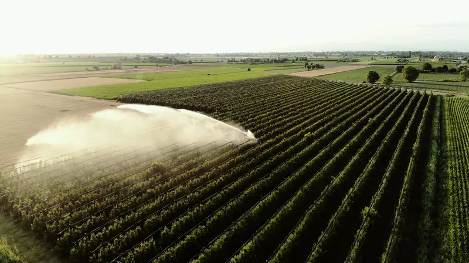
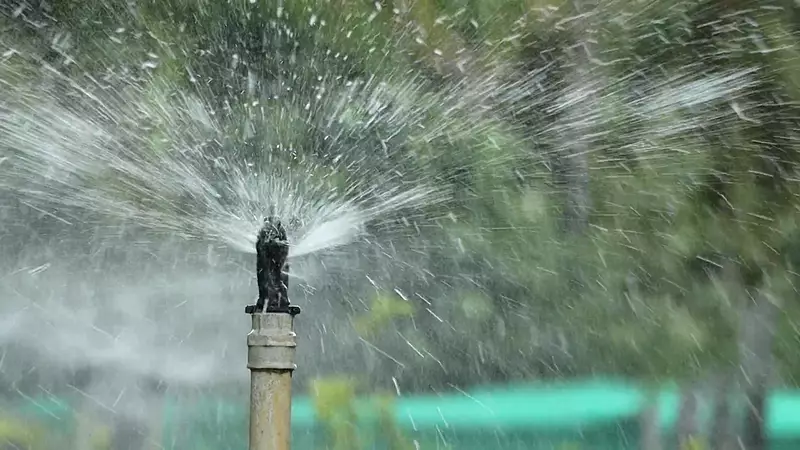
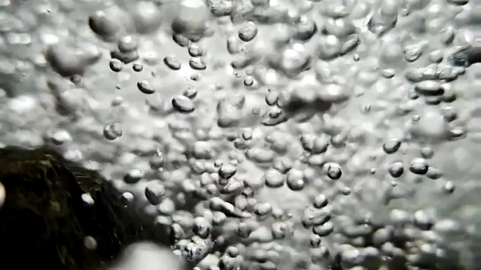
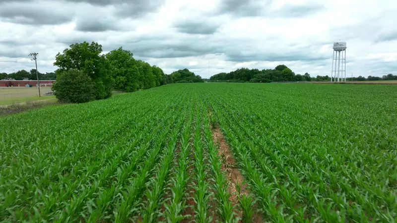

01 · Maquinaria de riego
Máquinas que riegan hectáreas enteras.
Mueven enormes cantidades de agua, pero casi siempre con horarios fijos: riegan igual aunque llueva.
Agricultura inteligente
Riego con nanoburbujas, sensores e inteligencia artificial: tu campo se riega solo cuando lo necesita.
El problema y la solución

01 · Maquinaria de riego
Mueven enormes cantidades de agua, pero casi siempre con horarios fijos: riegan igual aunque llueva.

02 · Riego tecnificado
Aspersores y goteo acercan el agua, pero nadie les dice cuándo el suelo realmente la necesita.

03 · Nanoburbujas
Burbujas microscópicas que permanecen en el agua de riego y oxigenan el suelo.

04 · DORN AGRO
Un ESP32-S3 mide el suelo y el clima, y enciende la bomba de nanoburbujas solo cuando hace falta.
¿Qué es DORN AGRO?
DORN AGRO une un equipo de campo con sensores y una bomba de nanoburbujas, una plataforma web que funciona también como app de celular y un asistente de inteligencia artificial.
El agricultor ve lo que pasa en su cultivo, recibe alertas de clima, controla el riego desde el teléfono y obtiene recomendaciones sobre qué sembrar y cuándo.
Cómo funciona
Humedad de suelo, temperatura y humedad del aire, corriente y batería.
Lee los sensores, activa la bomba de nanoburbujas mediante un relé de 5 V que conmuta el relé de potencia de 12 V, y protege el sistema ante sobrecorriente o batería baja.
Los datos viajan por WiFi mediante MQTT; cada orden recibe confirmación del equipo.
Panel, alertas y un asistente que entiende «riega 10 minutos» o «¿qué me conviene sembrar?».
Por qué importa
72%
se usa en la agricultura. Cada riego innecesario pesa.
FAO · AQUASTAT 202515–50%
al regar según la humedad real del suelo en vez de horarios fijos, sin bajar la cosecha.
Univ. de California (UC ANR)+19%
en promedio con riego oxigenado frente al riego por goteo común.
Scientific Reports, 2023+18%
más cosecha por cada litro regado cuando el agua lleva más oxígeno.
Scientific Reports, 2023Cifras de estudios publicados. Los resultados propios de DORN AGRO se medirán en el piloto.
La ciencia detrás
Son burbujas de aire miles de veces más pequeñas que un grano de arena. No suben a la superficie ni se revientan: viajan con el agua de riego hasta la raíz.
Resultados en ensayos con agua de micro y nanoburbujas:
El oxígeno disuelto se mantiene en el agua mucho más tiempo y llega a la zona de las raíces, que respiran mejor y absorben más nutrientes.
Las nanoburbujas bajan la tensión superficial del agua: se infiltra de forma más pareja y se pierde menos por escurrimiento.
Un ambiente con oxígeno es menos favorable para los hongos que pudren la raíz, así que se necesitan menos químicos.
DORN AGRO enciende la bomba de nanoburbujas según los sensores y el pronóstico: el beneficio llega sin gastar agua ni energía de más.
La diferencia
Para quién es
Tecnología de precisión a un precio posible, sin conocimientos técnicos.
Riego según la necesidad real de cada cultivo y temporada.
Humedad y oxigenación controladas en espacios donde cada planta cuenta.
Varios equipos y predios en una sola cuenta, con datos en tiempo real.
Funciones
Lecturas en vivo con historial y gráficos, desde cualquier lugar.
Heladas, calor extremo, lluvia y viento para los próximos días en tu ubicación.
Agentes de riego, cultivos y técnico que trabajan por ti: riegan, vigilan y te avisan. IA base incluida; compatible con Gemini, OpenAI y Claude.
Enciende y apaga la bomba de nanoburbujas con confirmación real del equipo, a mano, programada o con IA.
Corte automático por sobrecorriente, batería baja o tiempo máximo de bombeo.
Opciones según tu necesidad; en Premium, según tu zona, temporada y rentabilidad.
Objetivos de Desarrollo Sostenible
Riego según la humedad real del suelo y agua oxigenada con nanoburbujas: se usa solo el agua necesaria.
Tecnología IoT e inteligencia artificial accesibles para pequeños y medianos agricultores.
Decisiones de siembra informadas que reducen pérdidas de cosecha y uso innecesario de insumos.
Alertas de heladas, calor y lluvia para adaptarse al clima, con un equipo de bajo consumo alimentado por batería.
Planes
$0 para siempre
Para empezar a medir y controlar.
$5.000 CLP al mes
Todo lo de Gratis, y además:
El equipo DORN se instala una vez; nosotros te acompañamos después.
Conversemos
Asesoría personalizada, demostraciones en terreno y en ferias agrícolas, y soporte por WhatsApp y desde la app.
Para pilotos, financiamiento e investigación queremos trabajar con:
Descarga la app
DORN AGRO se instala directo desde esta página y funciona como una app: ícono propio, pantalla completa y apertura rápida.